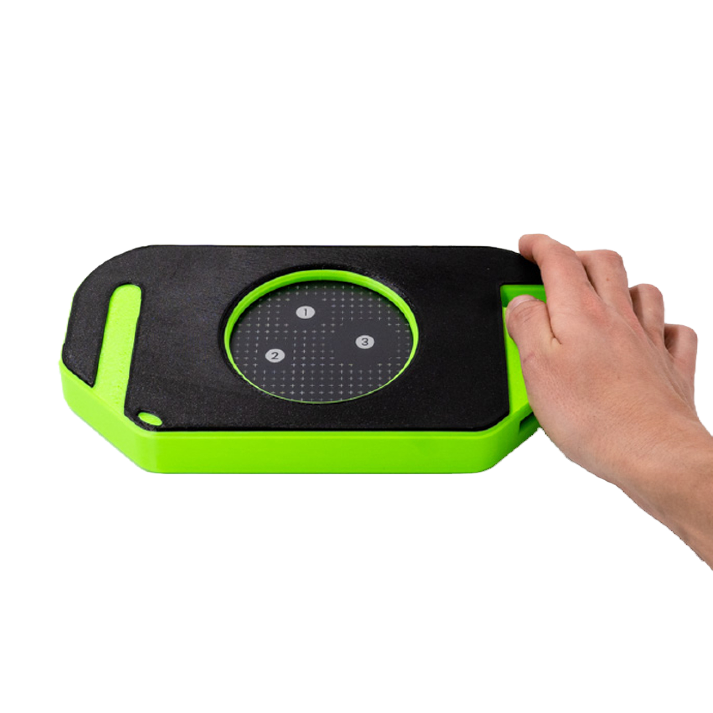
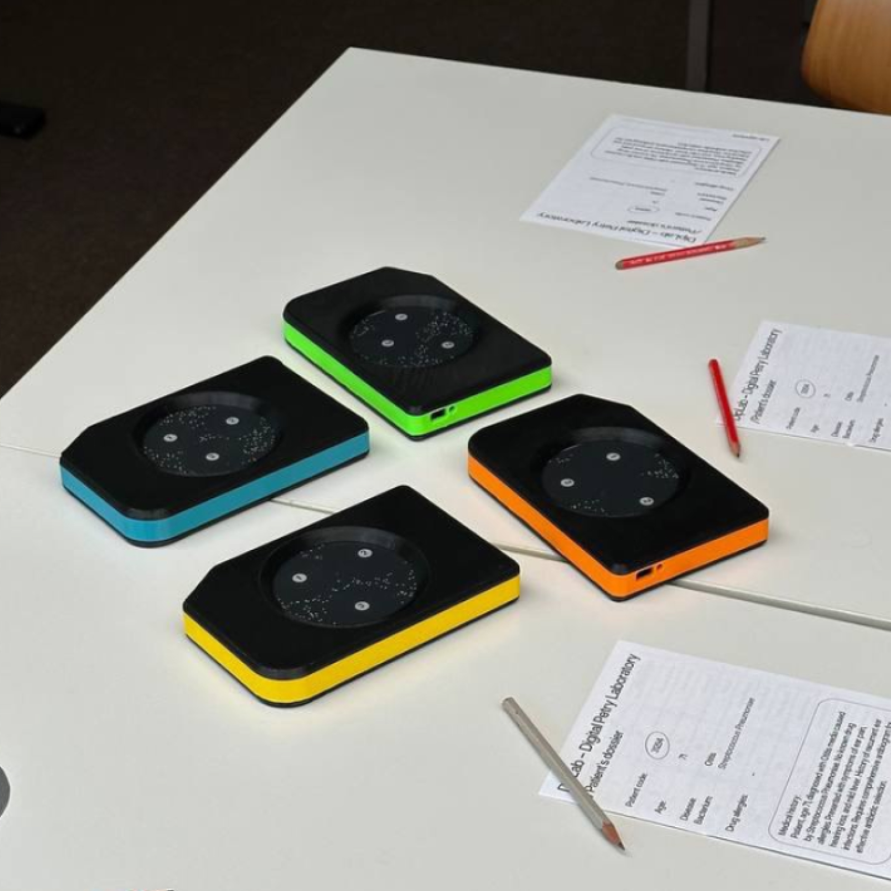
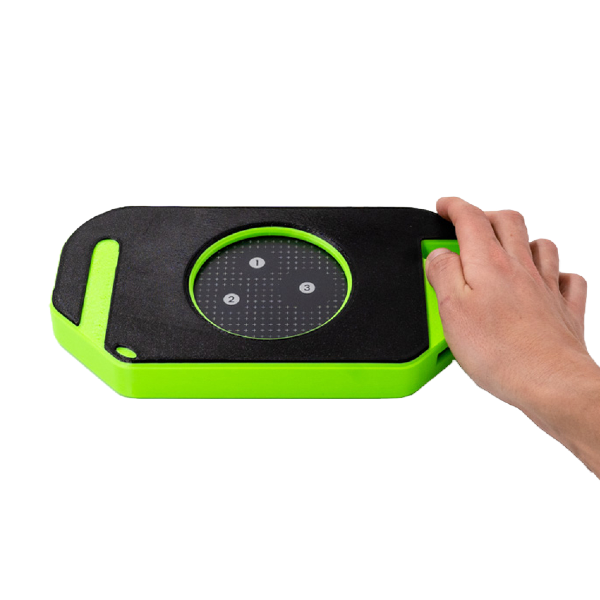
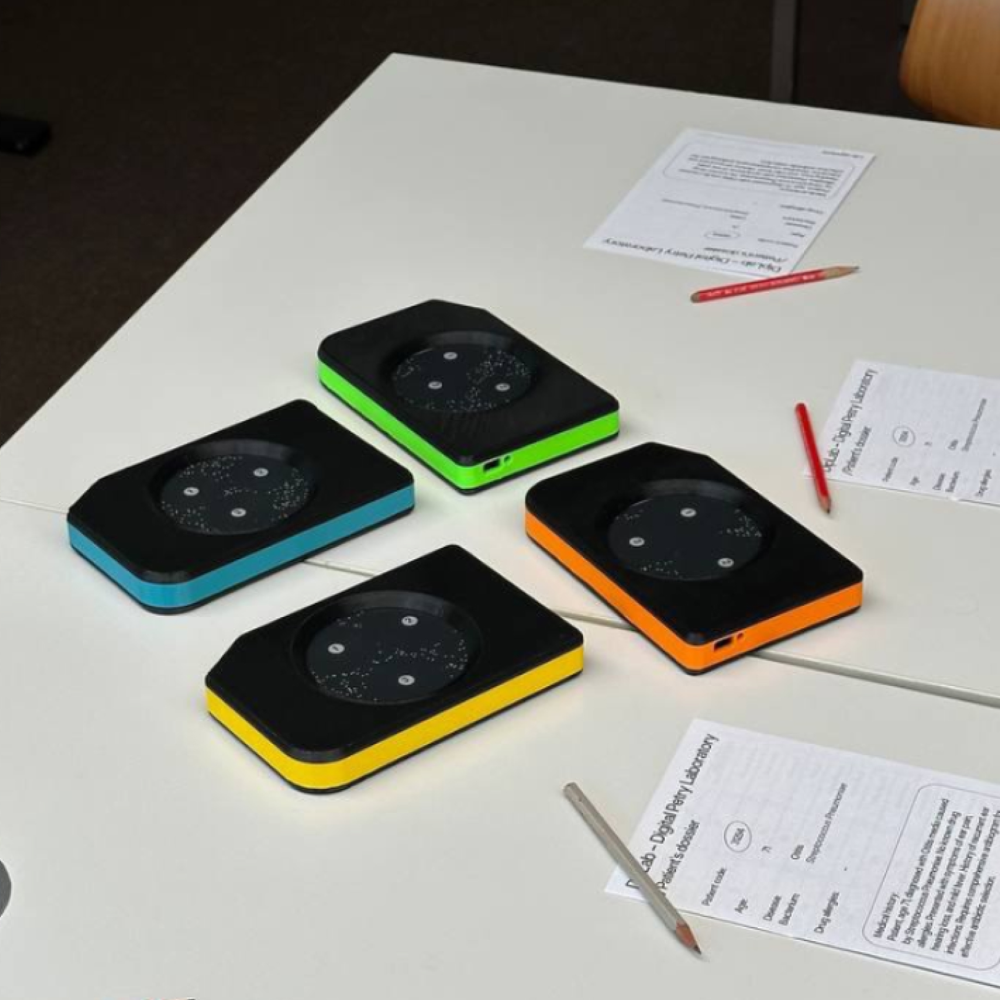
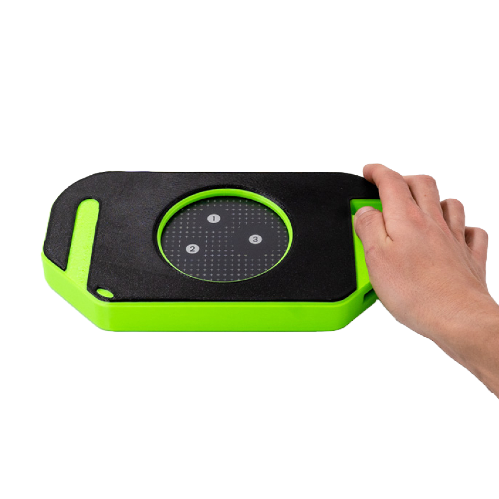
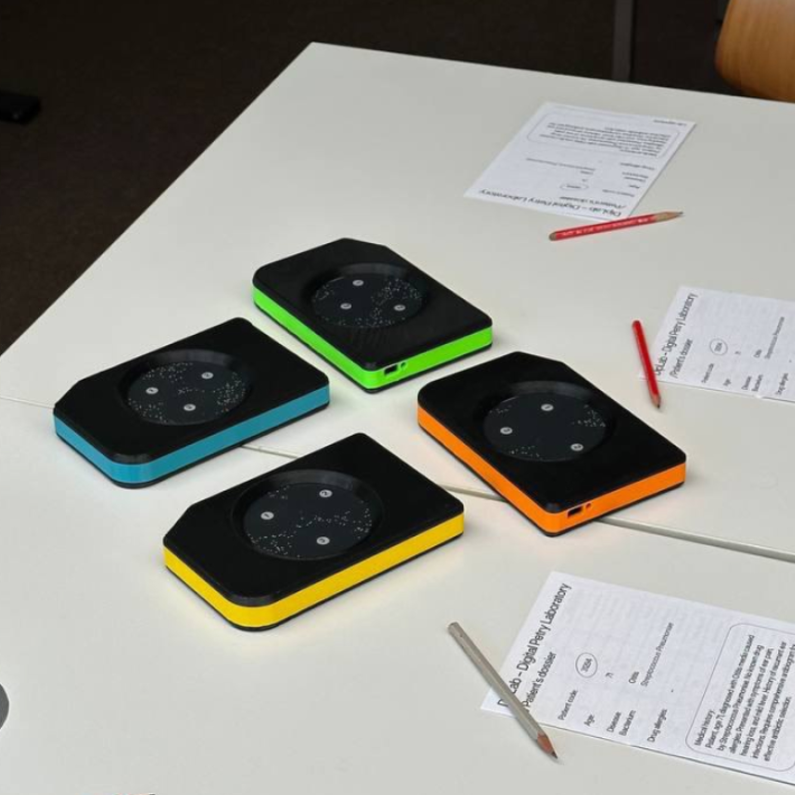

To engage high-school students in understanding antimicrobial resistance, DipLab translates the antibiogram test into a digital format. Through a handheld device, elements of laboratory practice are simulated, turning the steps of testing antibiotic susceptibility into an accessible learning activity.
The digitization of antibiogram testing has enabled the exploration of antibiotic susceptibility assays outside traditional microbiology settings. The DiPLab workshop provides an interactive, hands-on session designed to deepen participants' understanding of antimicrobial resistance (AMR) and appropriate antibiotic use. The session begins with an introduction by a microbiologist or tutor to explain AMR and the use of the DiPLab platform. Participants, divided into groups, simulate real-world scenarios using devices preloaded with specific bacterial strains and patient medical records
They follow scientific protocols to test antibiotics on digital Petri dishes, analyze inhibition zones, and determine the most effective treatment. The workshop includes visualization tools to track bacterial growth and antibiotic effectiveness over time, encouraging collaborative learning and problem-solving. By engaging in this process, participants gain practical insights into the significance of responsible antibiotic use and its impact on healthcare.


with
DipLab was developed by Matteo Subet as part of his Master’s thesis in Interaction Design at SUPSI, under the supervision of Dr. Serena Cangiano and Marco Lurati. To integrate the tool into the MAKEAWARE! initiative, a dedicated workshop format was designed and refined across multiple iterations. Matteo is now a PhD student at the SUPSI Institute of Design, where he focuses on protocols and documentation for fabrication laboratories.
protocol
To ensure the format is easily replicable by others, particularly educators, the functionalities and structure of the device have been documented in the following video tutorial. The focus on educators aims to support their learning environments by providing a tool that enables the replication of antibiogram tests outside laboratory settings, without safety risks and without the need to wait for visible microscopic reactions to antibiotics.
To address the limitation of working in microbiology laboratories, technology has been reconsidered for this format to allow the antibiogram procedure to be tested outside specific environments and to involve a wider public. In this direction, “DipLab - Digital Petri Laboratory” provides a safe environment to work with bacteria and antibiotics, engaging (especially young) people in interactive movements that aim to recreate laboratory experimental practices through a multimodal digital tool. Additionally, technology can shorten the antibiogram test progression, allowing results to instantly emerge instead of requiring 48 hours of cultivation.
The system consists of two parts: a web application running on smartphones and a console-sized device designed like a handheld game. Inside the device, a microprocessor (such as an Arduino Board, Raspberry Pi, or ESP32) connects different components: a circular touchscreen that simulates a Petri dish, an accelerometer to mimic the spreading of bacteria by tilting, and a Wi-Fi module to enable communication with the smartphone. Through the app, students select bacteria, test antibiotics, and explore how outcomes change over time.
DipLab is used in a workshop format where students receive fictional patient records describing illnesses and allergies, then test possible treatments with the digital device. By combining simulation, role play, and collective discussion, the activity helps high-school students understand antimicrobial resistance, the use of antibiotics, and the process of prescribing treatments.
The DiPLab format have been part of the TechDay initiative, which considers full-day events held at Swiss secondary schools organized by the Swiss Academy of Engineering Sciences (SATW) since 2007 These events allow students to participate in hands-on, interactive modules of their choice, where they engage with experts and explore various technical and scientific topics and applications. Within this context, the DiPLab has been presented at the Social and Health Professional Centre (SSMT), and the cantonal high school in Locarno, at the Kantonsschule Zürcher Unterland, in Bülach.
 


